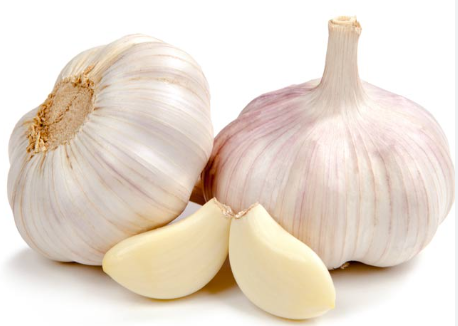

Garlic tips 
Cut the ends off the clove then Smash with a knife so the skin comes off easily.
At the garlic at the right stage.
Early will give a more sublte garlic taste at the end
Late will give a more pungent flavour